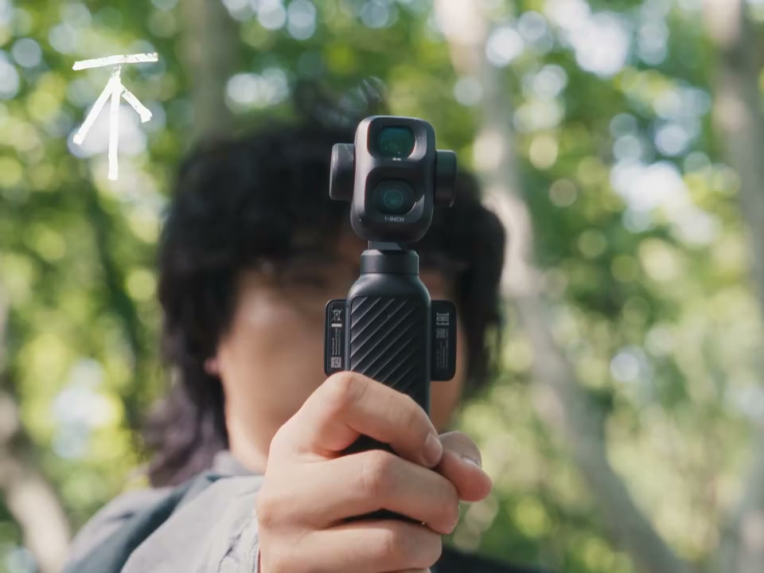
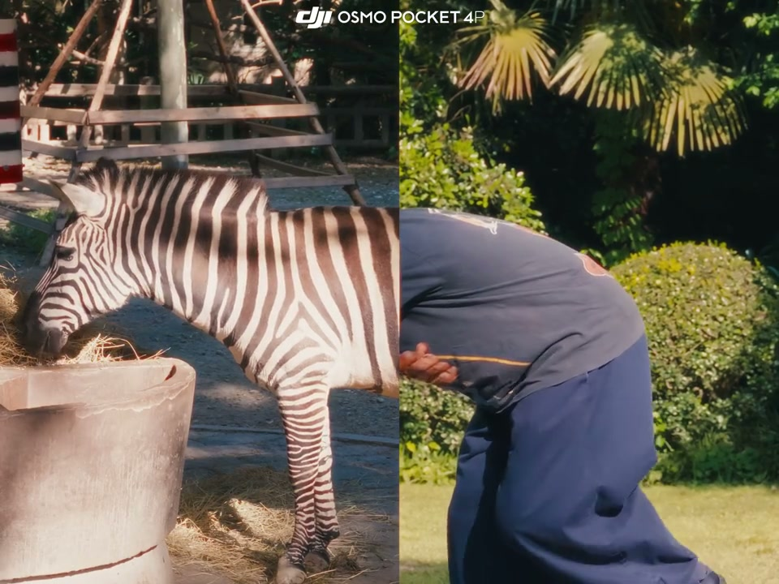
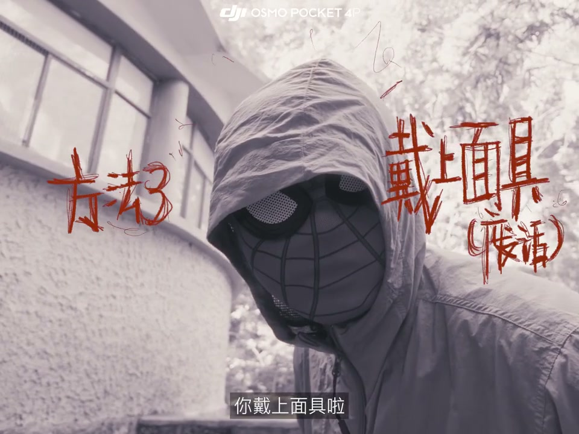
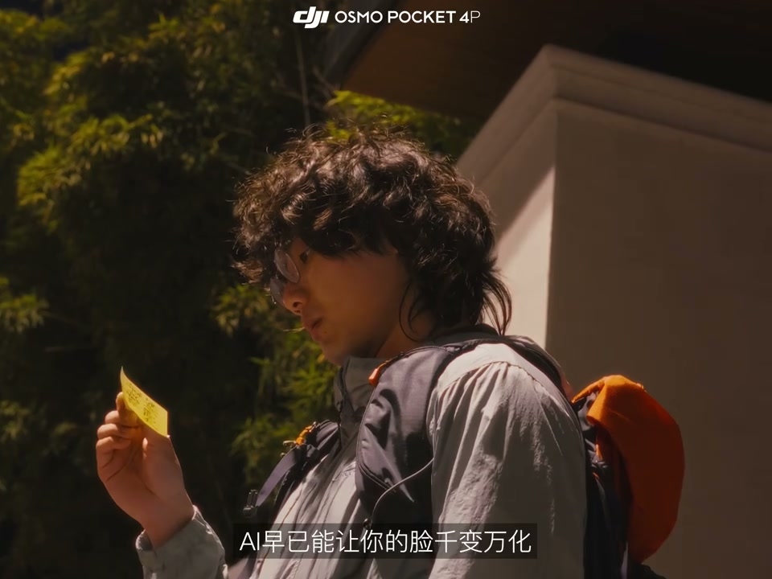
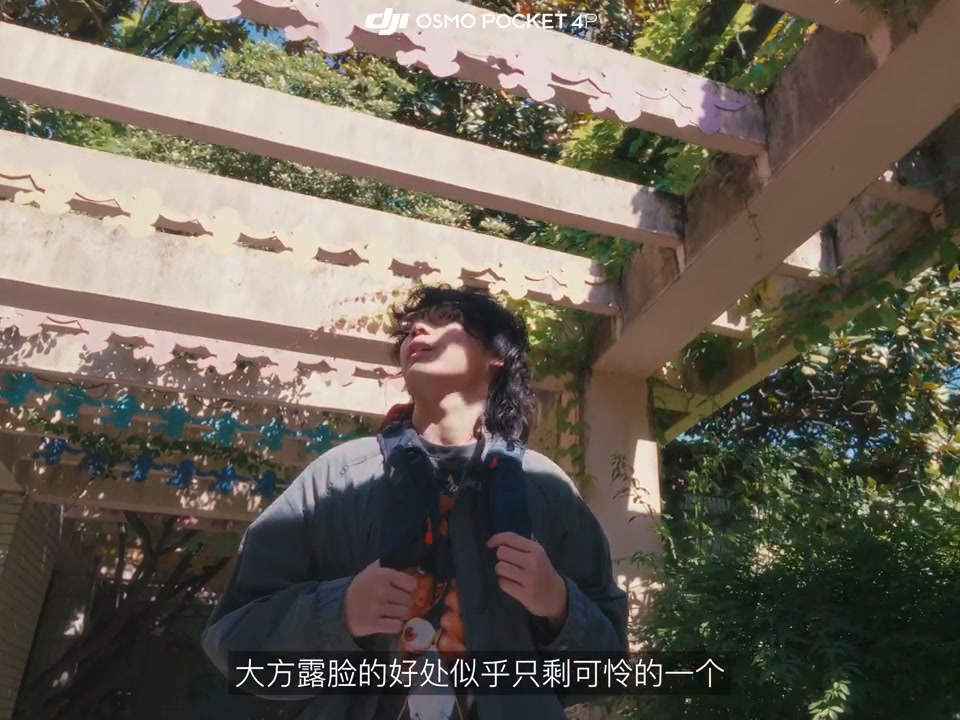

01
中文
不想在视频里露脸吗？方法太多了。
EN
Don't want to show your face in a video? Plenty of ways.
表达提示too many ways（方法太多）

Scene English · Vlog · 不露脸技巧
When You Don't Want to Show Your Face in a Vlog | DJI Pocket 4P
🎧 语音讲解
Split Screen and Cutouts
情境不想露脸的方法很多：分屏融合、整体抠出，让你成为环境的一部分。
不想在视频里露脸吗？方法太多了。
Don't want to show your face in a video? Plenty of ways.
表达提示too many ways（方法太多）
比如像这样把画面变成分屏，让上半部分和你的身体产生有趣的融合。
Like splitting the screen so the upper half fuses playfully with your body.
表达提示playful fusion（有趣融合）
或者干脆放弃融合，把整个身体抠出来。
Or skip the fusion and cut your whole body out.
表达提示cut out（抠出来）
这样你看起来像是环境中的一部分，也不错。
Then you look like part of the environment—also nice.
表达提示part of the environment（环境的一部分）
too many ways（方法太多
playful fusion（有趣融合

Masks and Coverings
情境戴上面具、或用树叶车票等物体挡住脸，还能顺势做个转场。
适当的时候还能做个转场，你带上面具了。
At the right moment you can even cut to a mask.
表达提示wear a mask（戴面具）
面具足够特别的话，反而更能让观众记住你。
A distinctive mask makes you even more memorable.
表达提示memorable（让人记住）
但这只是后期找个东西挡住脸吧。
Or simply cover your face with something in post.
表达提示cover the face（挡脸）
树叶、车票、落花，随便是根据你Vlog的主题来变化。
Leaves, tickets, falling petals—pick whatever fits your vlog's theme.
表达提示match the theme（贴合主题）
wear a mask（戴面具
memorable（让人记住

Backs and Footsteps
情境传统一点：全片拍背影，或者拍脚步，照样有代入感。
要么传统一点，转过身去，全片都拍背影。
Or go classic: turn around and shoot your back the whole film.
表达提示shoot the back（拍背影）
或者拍脚步也行嘛。
Footsteps work too.
表达提示footage of steps（脚步画面）
shoot the back（拍背影
footage of steps（脚步画面
The AI Era and the Benefits of Hiding
情境AI能改变你的脸，但不露脸的方法和好处都多到爆炸：暂缓容貌焦虑、画面更有创意。
但我也知道时代变了，AI早已能让你的脸千变万化。
But times have changed; AI can transform your face endlessly.
表达提示transform your face（换脸）
不露脸的方法和好处都多到爆炸。
The tricks and perks of hiding your face are endless.
表达提示countless benefits（好处无数）
暂缓容貌焦虑，画面更有创意。
It eases appearance anxiety and boosts creativity.
表达提示ease anxiety（暂缓焦虑）
transform your face（换脸
countless benefits（好处无数

Showing Your Face: True Memories
情境相比之下，大方露脸的好处只剩一个：记录下最真实的回忆。
相比之下，大方露脸的好处似乎只剩可怜的一个。
In contrast, showing your face has one humble benefit left.
表达提示humble benefit（仅剩的好处）
记录下最真实的回忆。
Recording the truest memories.
表达提示truest memories（最真实的回忆）
那些大大方方展出来的面孔，能让回忆清晰地浮现。
Only faces you openly showed keep memories vivid.
表达提示memories stay vivid（回忆清晰浮现）
那时候一定不会懊悔，只会遗憾拍得不够多。
You'll never regret it then—only wish you'd filmed more.
表达提示filmed more（拍得更多）
humble benefit（仅剩的好处
truest memories（最真实的回忆

Point the Lens at Yourself
情境结语：拿起相机，把镜头对向自己，为未来留下真实的自己。
那么现在，拿起它，把镜头对向自己吧。
So now, pick it up and point the lens at yourself.
表达提示point the lens（对准镜头）
point the lens（对准镜头
说分屏融合
说整体抠图
说面具遮挡
说背影脚步
说露脸好处
不露脸也有其好处。
遮挡物要贴合主题。
露脸保留真实回忆。
背影脚步同样经典。
只会遗憾拍得不够多。